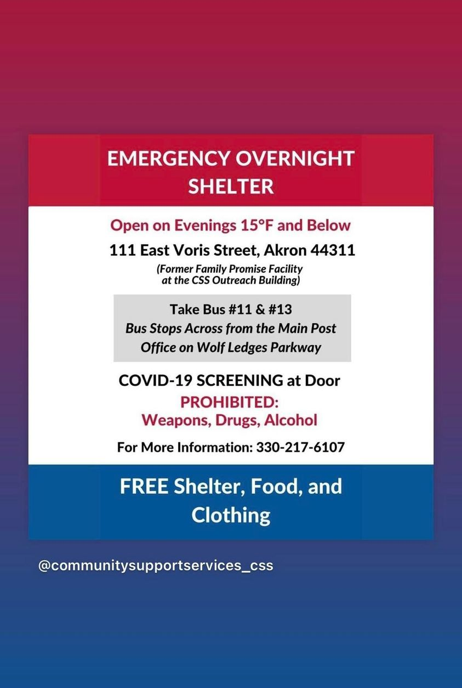

Timeline photos
I am thankful this exists. I am also thankful when a husband says he's going to cut down on beating his wife.
* How is a homeless person supposed to know when this thing is open? How long does it have to be 15 degrees? What if I get all the way over there and it's closed? What if I had one beer? Oh... and "NO PETS" was also yelled at me like they are yelling at people about drugs and weapons. It's all so condescending. (Would you say that to someone who wasn't homeless? I don't read those kinds of signs on hotels I stay at.) You can feel the judgment drip off this thing. And what happens if I have covid?
It's just riddled with anxiety producing questions. If I was more than a mile away from this place I'd probably take my chances in a dumpster. It's more reliable.
OPEN THIS THING FULL TIME!